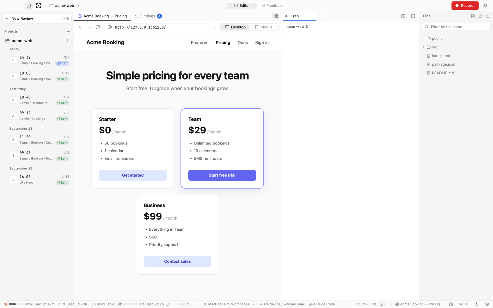

Free and open source · MIT
Circle it. Say it.
Send it to your agent.
MOVIE-ADE is a desktop app for video-based UI feedback. Use your web app, circle what’s wrong and say what you want. When you stop recording, each point becomes a screenshot, your words and the URL, ready for Codex or Claude Code.


MOVIE-ADE 0.1.0. English by default, Japanese available in Settings.
How it works
Circle. Talk. Send.
-
01
Circle
Use your page in the built-in browser and circle the spot with the pen. You can also drop a text note.
-
02
Talk
Say what should change. Or turn the mic off and use pen and text only.
-
03
Send
Stop to get a list of findings. Edit them, then send them to the agent in the built-in terminal.
Features
Built for one job: video review.
Browser, recorder and agent terminal in one window. No copy-paste between apps.
Record in the built-in browser
Open your dev server inside MOVIE-ADE and record while you use it. Switch between desktop and mobile widths.
One finding per moment
Each time you speak or draw becomes a finding with a screenshot, your words and the URL. Edit, merge or delete before sending.
Straight to your agent
Send to Codex or Claude Code in the built-in terminal, or copy the prompt for another agent. The video itself is never sent.
Your choice of transcription
On-device with whisper.cpp (free), your own OpenAI API key, or an OpenAI-compatible server on your own GPU.
Stays in your project
Findings, screenshots and logs are saved to .ade-movie/reviews/ and added to Git’s local exclude list.
Free and open source
MIT licensed. No server or API key on our side. Agents run on the CLI subscriptions you already have.
What your agent gets
Not a video. Screenshots, words and URLs.
Your agent reads findings like any other prompt, without spending context on video.
## 1. Make the Sign up button darker - Request: use a color that looks clickable - Said: "This button is so light it doesn't look clickable." - Image: ./01.png - URL: http://localhost:3000/pricing
- Request, quote, image, URL. Each finding keeps what you asked for, your exact words, a screenshot with your pen marks, and where it happened. Findings are written in your interface language (English or Japanese).
- Your words are kept. The original speech and drawings are saved. You can edit the request before sending.
- One click to send. MOVIE-ADE types an instruction to read the findings into the agent in the built-in terminal.
Platforms
macOS, with Windows and Linux in preview.
Tested on macOS with Apple silicon. Windows and Linux builds are provided but not yet tested on real hardware.
macOS
- Apple silicon / Intel
- .dmg
Tested on Apple silicon.
Windows Preview
- x64 / Arm64
- Installer (.exe)
Not yet tested.
Linux Preview
- x64
- AppImage / .deb
Not yet tested.